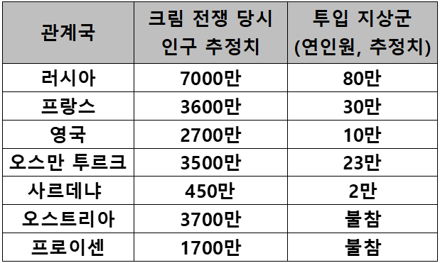
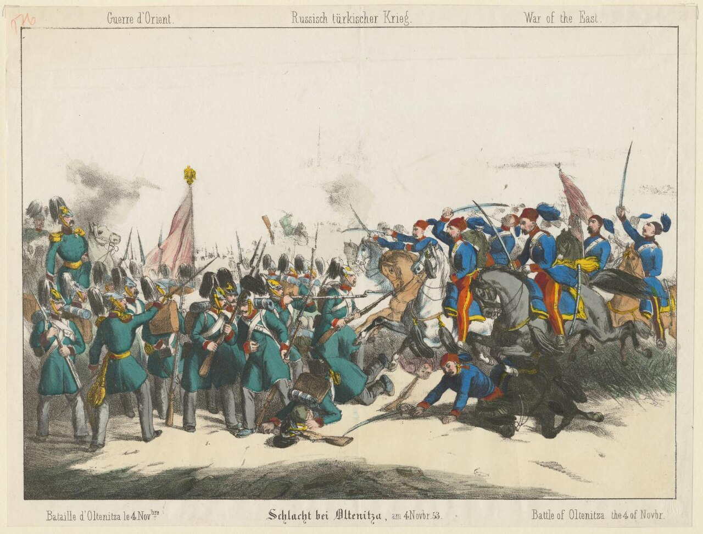
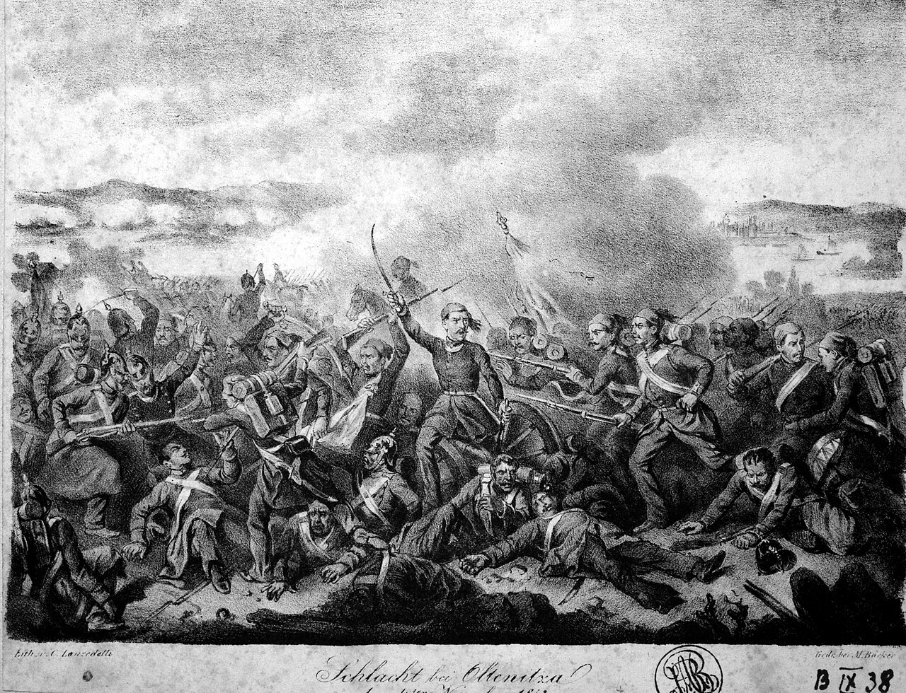
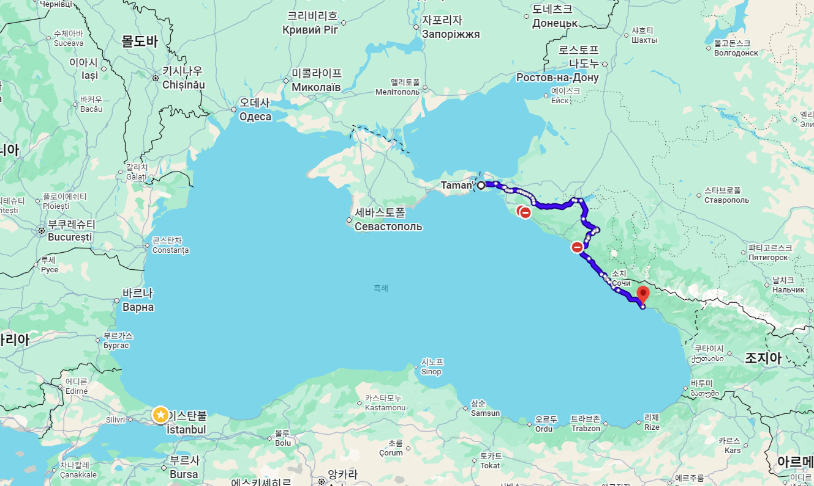
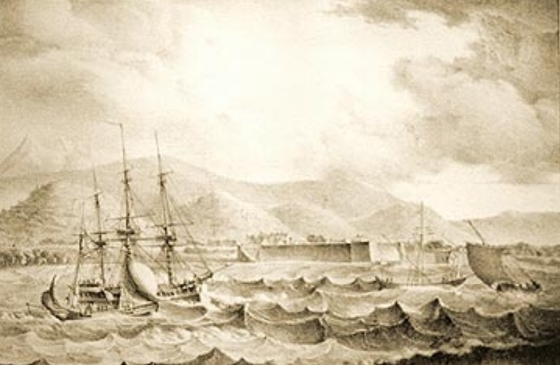
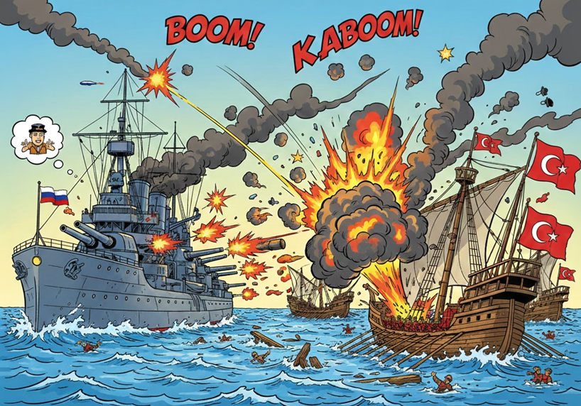
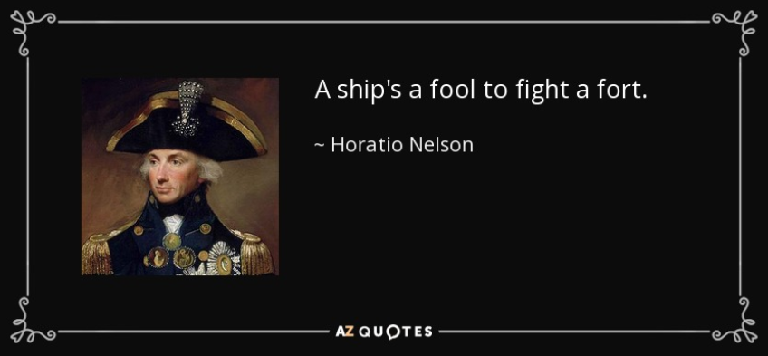
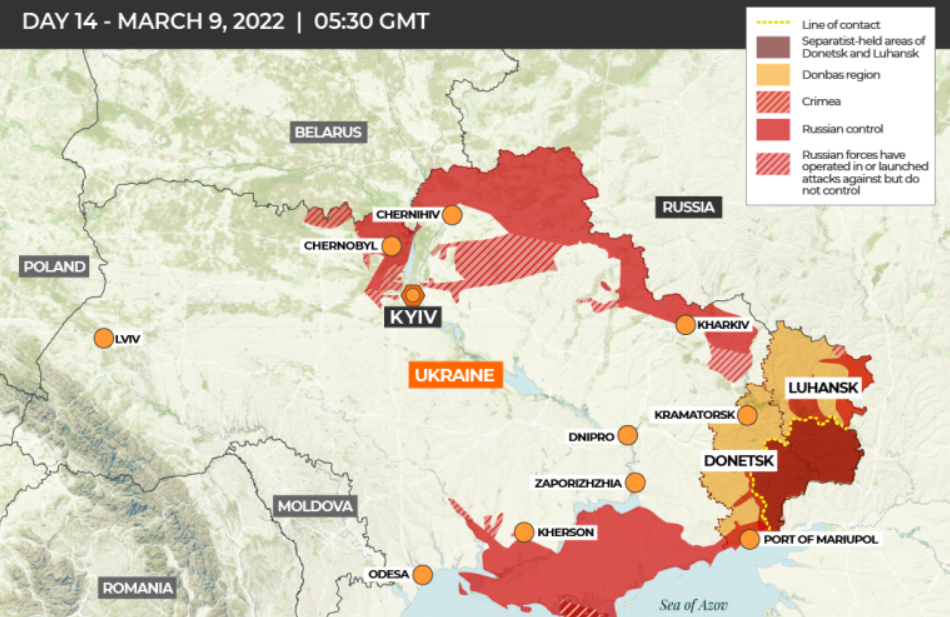

보스포러스 해협 이야기 (3) - 넬슨의 명언
게시: 2026-02-19T06:30:27+09:00
1853년 6월 러시아가 왈라키아-몰다비아 공국들을 침공하여 점령하고, 영국과 프랑스의 부추김을 받은 오스만 투르크가 그에 맞서 러시아에 선전포고를 하면서 크림 전쟁이 발발했습니다. 그러나 적어도 반 년 이상, 영국과 프랑스는 오스만 투르크를 돕기 위한 병력과 함대를 파견하지 않았습니다. 전통적으로 흑해는 영국과 프랑스에게는 플루타르코스 영웅전에나 나오는 머나먼 미지의 영역이었으므로, 그들은 처음부터 실제 전투에 참전할 생각이 없었습니다. 흑해가 지리적으로 너무 먼 지역이었으므로 자국의 이익에 상관이 없는 것은 아니었습니다. 러시아가 오스만 투르크를 통째로 점령하거나, 특히 이스탄불 일대를 점령하여 러시아 흑해 함대가 지중해로 자유롭게 드나들게 되는 것은 영국과 프랑스의 이익은 물론 안보에도 크게 위협이 되는 상황이었으므로, 그건 막아야 했습니다. 영국과 프랑스가 실제 참전하는 일은 없을 거라고 안이하게 생각했던 이유는 오스만 투르크의 저력을 믿었기 때문이었습니다. 18세기 후반부터는 쇠락이 뚜렷해져서 19세기 중반에는 이미 동네북 신세가 되었다고 해도, 오스만 투르크는 불과 100년 전까지도 동유럽을 긴장시키던 전통의 강국이었습니다. 무엇보다 당시 군사 기술은 아직도 총검의 숫자가 군사력의 척도가 되던 수준이었습니다. 오스만 투르크의 인구는 러시아에 비하면 적었지만, 프랑스 수준으로 많았습니다. 게다가 오스만 투르크도 유럽과 활발히 교역을 했으므로 유럽식 머스켓 소총과 대포, 군함들로 무장하고 있었습니다. 이런 오스만 투르크가 러시아에게 참패하여 이스탄불과 보스포러스-다다넬즈 해협 자체를 빼앗긴다? 그건 상상하기 어려운 일이었습니다.

(크림 전쟁 당시 관련국들의 인구와, 크림 전쟁에 투입한 병력입니다. 물론 저 병력수는 전쟁 내내 유지했던 총병력이 아니라, 전체 기간에 투입한 연인원을 뜻하는 것입니다. 오스트리아와 프로이센의 인구를 굳이 보여드린 것은 비교 차원에서 참고하시라고 보여드린 것입니다만, 실제로 오스트리아와 프로이센도 이 전쟁에서 역할이 있었습니다. 러시아가 왈라키아-몰다비아에 더 많은 병력을 일거에 투입하여 이스탄불까지 진격하지 못한 이유 중 하나는 30만 병력을 동원할 수 있던 오스트리아가 국경 지대에 병력을 배치하는 등 러시아를 간접적으로 위협했기 때문이었습니다. 오스트리아로서는 러시아가 오스만 투르크를 차지하는 것이 자국 이익에 반하기 때문에 그랬던 것입니다만, 불과 몇 년 전인 1848년 '유럽의 봄' 혁명 기간 중 병력을 파견하여 오스트리아를 도와주었던 러시아로서는 오스트리아의 이런 배신 행위에 크게 충격을 받았습니다. 러시아가 유럽 국가들에 대해 믿을 수 없는 것들이라는 혐오감과 불신감을 가지게 된 계기 중 하나였습니다. 실은 러시아가 그렇게 '우리가 도와주면 쟤들도 나중에 우리를 돕겠지'라고 믿었던 것이 너무나 순진한 생각이었지요. 반면에 비스마르크의 프로이센은 러시아에 대해 우호적인 태도를 유지했는데, 그 이유는 나중에 오스트리아를 칠 때 러시아의 중립을 받아내기 위함이었습니다. 국제 관계는 이렇게 의리가 아니라 이익을 따르는 것이 정석입니다.) 실제로 크림 전쟁 발발 초기, 전황이 오스만 투르크에게 일방적으로 불리하기만 한 것은 아니었습니다. 왈라키아-몰다비아 전선에서는 오스만 투르크군의 활약이 큰 성과를 내지 못했으나, 러시아군의 피해는 점점 커지고 있었습니다. 콜레라가 발발하여 러시아군을 픽픽 쓰러뜨리고 있었기 때문이었습니다. 그리고 오스만 투르크군도 정말 허수아비 같은 존재만은 아니었습니다. 오스만 투르크군 1개 대대가 올테니차(Oltenitza) 전투에서 약 6천의 러시아군과 싸워 승리하기도 했습니다.

(왈리키아의 올테니차(Oltenitza)는 오늘날 루마니아에 있는 도시로서, 오스만 투르크군 1개 대대가 도나우강을 건너 진격한 뒤, 올테니차(Oltenitza)에 간단한 보루를 쌓고 포대를 배치하면서 시작된 전투입니다. 이 전투에서 양측이 주장하는 상대 병력과 피해는 큰 차이를 보이지만 분명히 오스만 투르크가 적은 병력에도 불구하고 승리했고, 러시아군은 최소 수백의 큰 인명 피해를 냈습니다.)

(올테니차 전투를 묘사한 다른 그림입니다.) 특히 흑해 동해안인 카프카즈 일대, 즉 오늘날의 압하즈-조지아 일대에서는 러시아군이 수세에 몰렸습니다. 러시아군이 비록 병력은 많았으나 분명히 선진화된 군대는 아니었으므로 특히 병력 수송과 병참 문제에 있어서는 크게 낙후된 모습을 보여주고 있었습니다. 그러다보니 유럽쪽인 왈라키아-몰다비아에서도 더 진격을 못하고 있었는데, 하물며 완전히 변방이라고 할 수 있는 카프카즈 일대에서는 거의 손을 놓다시피 할 수 밖에 없었습니다. 특히 오스만 투르크가 이 일대에서 러시아군을 궁지에 몰아넣을 수 있었던 것은 전통적으로 '오스만의 호수'였던 흑해를 이용하여 선박을 이용하여 탄약, 식량 등의 보급품 수송이 가능했기 때문이었습니다.

(러시아가 카프카스 및 중앙아시아를 침략한 과정은 유럽 방면에 비해 저항이 적어 수월했던 것 같지만 실은 전혀 그렇지 않았습니다. 원래부터 거셌던 현지 주민들이 매우 거칠고 끈질기게 저항했고, 러시아도 병력 부족과 열악한 수송로 때문에 어려움이 많았습니다. 19세기 초반에 러시아는 타만(Taman)부터 오늘날 압하스의 수후미(Sukhumi)까지 많은 노력을 들여 소위 '흑해 방어선'을 구축해놓았습니다만, 크림 전쟁 이전부터도 현지 세력의 반격으로 이들은 큰 피해를 입었고, 특히 크림 전쟁 기간 중에는 이 방어선을 아예 포기할 정도로 수세에 몰렸습니다.)

(19세기 초반, 수후미에 설치된 러시아의 요새입니다. 영국이 그랬던 것처럼 러시아도 식민지 침공 때는 현지 세력간의 갈등을 적극 활용했고, 친러파 압하스 귀족들을 포섭하여 이런 요새를 건설했습니다. 그러나 이 수후미 요새는 1870년대의 오스만 투르크와의 전쟁 때 다시 오스만에게 빼앗기는 등, 러시아의 중앙 아시아 침공은 우리의 생각보다는 훨씬 더 험란한 과정을 거쳤습니다.) 그런데 오스만 투르크가 흑해의 해상 보급을 통해 카프카즈 일대에서 전과를 올리고 있었다면, 왜 러시아는 기껏 많은 돈과 시간을 들여 건설한 흑해 함대를 동원하여 그 해상 보급을 끊지 않았을까요? 실은 영국과 프랑스의 엄포 때문이었습니다. 영국과 프랑스는 직접 참전하지 않는 대신, 러시아에 대해 '오스만 투르크와의 전쟁에서 반드시 수세적으로만 싸울 것'을 요구하며 만약 공세적으로 나온다면 영국과 프랑스도 직접 참전하겠다고 협박을 하고 있었습니다. 하지만 일이 이렇게 되자 러시아도 '흑해 함대는 이럴 때 쓰려고 만든 거 아니냐'는 생각을 하게 되었습니다. 러시아 흑해 함대는 곧 오스만 선박들을 요격하러 나섰습니다. 그 결과로 나타난 것이 시놉(Sinop) 해전입니다. 이 시놉 해전의 결과 때문에 영국과 프랑스가 러시아에게 선전포고하고 직접 참전하게 되었고, 인류 역사상 처음으로 흑해에 영국 및 프랑스 함대가 진입하는 일이 벌어졌습니다. 이 시놉 해전은 작렬탄을 쏘는 현대식 대포로 무장된 러시아 증기선 함대가, 구식 목조 범선으로 이루어진 오스만 투르크 함대를 일방적으로 학살한 전투로 흔히 알려져 있습니다.

(흔히 상상하는 시놉 해전의 모습입니다만, 물론 이건 전혀 사실이 아닙니다.) 실제로 이 전투 이전까지만 해도, 해전이란 그냥 커다란 쇳덩어리 구슬 같은 roundshot을 쏘아 적 군함에 구멍을 뚫는 것이었습니다. 그러니 당시 해전에서는 아무리 대포알을 얻어 맞아도 목조 군함이 침몰하는 일은 그다지 많지 않았고, 재수가 좋아서 적함의 탄약고에 화재가 발생하지 않는 이상 폭발이 일어날 일도 없었습니다. 그런데 이 시놉 전투에서는 오스만 함대는 단 한 척을 빼고는 모조리 화재를 일으킨 뒤 격침되었습니다. 뿐만 아니라, 시놉 해전의 중요한 의미 중 하나는 러시아 함대가 시놉 항구의 육상 포대와 교전하여 일방적으로 승리한 뒤, 며칠 동안 시놉 시내를 포격했다는 것이었습니다. 그 결과, 러시아 함대는 단 한 척의 군함도 잃지 않고 250명 수준의 사상자를 낸 것에 비해, 오스만 투르크는 사망자만도 3천 명 수준의 피해를 입었습니다. 시놉 해전은 양측 함대간의 결전 같은 것은 아니었고, 러시아 함대가 오스만 함대를 추격하다 오스만 함대가 흑해 남해안, 즉 아나톨리아의 북쪽 해안에 위치한 시놉 항구로 들어간 것을 보고 시놉 항구로 밀고 들어가 벌어진 전투였습니다. 항구로 밀고 들어간다고요? 지난 편에 설명드린 것과 같이, 불과 46년 전 덕워쓰 제독의 영국 함대도 기껏 이스탄불 앞바다까지 갔다가 감히 육상 포대와 포격전을 벌일 생각을 하지 못하고 돌아서야 했고, 다다넬즈 해협을 통과할 때 오스만 투르크의 육상 포대와 교전하다 거의 일방적으로 두들겨 맞기만 한 적이 있었습니다. 그런데 영국 함대도 아니고 러시아 함대가 시놉 항구로 밀고 들어갔다? 트라팔가 해전의 영웅 넬슨 제독은 여러 명언을 남겼지만 그 중 하나가 다음과 같은 것이었습니다. "요새와 교전하는 군함은 바보일 뿐이다." (A ship's a fool to fight a fort.)

(인터넷에서 흔히 볼 수 있는 이런 유명인들의 명언은 사실이 아닌 경우가 많습니다. 1801년 제1차 코펜하겐 전투에서 해상 포대를 상대로 싸웠던 넬슨이 정말 저런 말을 했을까요? 실제로 1794년 코르시카 칼비(Calvi) 공성전을 앞두고 넬슨 제독이 편지에서 저런 말을 하기는 했는데, 그렇다고 저 말을 넬슨이 처음 한 것은 아니고, 당시 함장들 사이에 격언처럼 내려오는 말이었다고 합니다. 참고로 칼비 공성전에서 넬슨은 오른쪽 눈을 잃습니다.) 이건 전에도 설명한 것처럼, 육상 포대와 군함과의 싸움은 본질적으로 군함에게 무조건 불리하며, 군함의 존재 목표는 바다에서의 제해권 장악이지 육상 포대와 싸우는 것이 아니라는 것입니다. 그런데 러시아 흑해 함대가 오스만 투르크 함대를 일방적으로 학살했을 뿐만 아니라, 시놉 항구 자체를 박살냈다? 그건 러시아 흑해 함대가 이스탄불까지 위협할 수도 있다는 뜻이었습니다. 세바스토폴에서 이스탄불까지는 바닷길로 그냥 훤히 뚫려 있으니, 그런 일은 언제든 발생할 수 있었습니다. 이 시놉 해전의 결과가 알려지자, 영국과 프랑스는 큰 충격을 받았고, 곧 직접 참전을 결정합니다. 그러면서 본격적으로 크림 전쟁이 시작됩니다.

(미국도 그렇지만 서유럽 열강들도, 남의 나라 전쟁에 참전 여부는 정의와 질서 같은 공자님 말씀이 아니라 기본적으로 자국의 이익에 따라 결정됩니다. 그렇다보니, 침략받는 나라가 의외로 잘 싸워서 어느 정도 세력 균형이 이루어지면 미국과 유럽은 자금과 무기 등 간접 지원만 하고 직접 참전은 하지 않지만, 침략 받는 측이 일방적으로 밀리게 되면 초반부터 참전하는 경우가 많은 것 같습니다. 대표적인 경우가 한국전과 베트남전, 그리고 쿠웨이트-이라크 전쟁 (미군 참전 이전에는 일방적으로 몰렸지요), 그리고 소련-아프가니스탄 전쟁, 러시아-우크라이나 전쟁 (침략 받는 측이 잘 싸웠지요)입니다. 참 착잡한 감정이 드네요.) 그런데, 이 시놉 해전은 대체 어떻게 그런 결과가 나온 것일까요? 트라팔가 해전이 벌어진 지 불과 50년이 지나기도 전에, 러시아가 무언가 오버 테크놀로지라도 발명했던 것일까요? 다음 주에는 시놉 해전의 기술적 부분을 보시도록 하겠습니다.